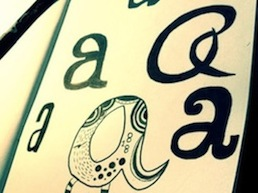

Yale Consulting engagements focus on one of the three following disciplines
We are committed to understanding our clients' needs and delivering the most resourceful, timely, and actionable advice and marketing material. An Engagement Manager will work with you to determine which division best fits the needs of your project.
Strategy
Conceptualization
- Business plan formulation
- Product specification
Research
- Market Research
- Focus Groups
Marketing
Advertising
- Connection to college campuses
- Viral campaigns
Branding
- Logo Design
- Image Consulting
Product

Development
- Web Design
- Web Development
Research
- Build Business Models
- Competitive Feature Analyses
Strategy Consulting
We have clientele ranging from multinational corporations to fledgling startups. Our status as an undergraduate organization gives us a fresh perspective on twenty-first century market problems. Strategy Consulting members are passionate about applying creative solutions to challenging issues, expediting the flow of information from native sources to clients, and using every opportunity to improve their breadth of knowledge.
Members of Strategy Consulting have gone on to internships and full-time positions with McKinsey and Co., the Boston Consulting Group, The Parthenon Group, and other major consulting firms. In fact, the interview process for admittance to this division requires a case interview. Members also practice case interviews as a group to develop a professional approach to problem solving and prepare for the job market after Yale.
Marketing Consulting
The Marketing Consulting branch applies fresh thinking and up-to-date methodologies to develop effective marketing strategies for our clients. For scalable, high-impact, and low-cost marketing campaigns we emphasize use of online portals and networks. As college students with dispodable incomes, we offer an unparalleled opportunity to take advantage of the latest trends relevant to Generation Y customers. We also conduct marketing campaigns themselves, adverising services and products to students from the source they find most reliable - their peers.
Product Development

The Product Development Group specializes in assisting clients in a wide array of programming oriented spaces, including Web 2.0 apps, mobile apps, big data analysis, and algorithm development. Product Development Group recruits heavily from the Yale Computer Science department. Members have received full-time and internship offers from large technology firms such as Google, Oracle, and Microsoft, as well as smaller companies like Pixorial, Fog Creek, and TripAdvisor. In fact, application to the Product Development Group requires a technical interview with questions often used for development opportunities with the aforementioned firms.
Teams in this division also include business oriented members who would otherwise join a Strategy Consulting Team. These members assess our clients' business models and product feature sets to ensure their programmer partners devote their resources to the creating technology well suited for problem at hand.